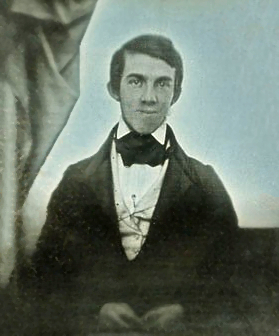

The Bone Garden is a 2007 novel written by Tess Gerritsen, loosely part of the Jane Rizzoli / Maura Isles series.

The book delves into Boston's past (1830), with Maura Isles playing a cameo role in present-day Boston. In the present, recently divorced 38-year-old Julia Hamill, trying to plant a garden for her newly purchased rural Massachusetts home finds a female skull buried in the rocky soil. She contacts medical examiner Maura Isles who finds it scarred with the marks of murder but can discover no more due to the skull's age.
In the past, Boston in 1830, Norris Marshall, a talented but poor student at Boston Medical College attempts to pay his college tuition by being a resurrectionist - one who plunders graveyards to sell the corpses on the black market. When two nurses are found murdered (one on the hospital grounds) as well as a respected doctor, Norris is considered as the prime suspect. He has had a glimpse of the killer at the second murder scene.
Norris, attempting to clear himself, attempts to track down the only other witness to have caught a glimpse (at the first murder scene), a beautiful 17-year-old Irish immigrant seamstress named Rose Connolly who fears she may be the next victim, exacerbated by the need to protect her newborn niece Meggie. Rose, Norris and his classmate Oliver Wendell Holmes comb the city, from its grim cemeteries and autopsy suites to its glittering mansions and power centers, to track down the killer.
Central to the plot is the condition of maternity wards at the time: doctors would often walk in from the autopsy area to the "lying-in" wards, and handle the women without using even gloves (let alone antisepsis, which Holmes later suggested) putting the women at higher risk of childbirth deaths than if they had given birth attended by midwives, or even unattended.
Julia and 89-year-old Henry Page, a descendant of one of Boston's first female doctors, Margaret Tate Page (Meggie as an adult), piece through letters written by Holmes to Dr. Page about the case to find out more about the murders and piece together the facts. For Julia, the driving question is if the victim is Rose, Holmes' final letter to Dr. Page, posted at the book's end, reveals that her aunt Rose survived the events, and never married.
About the author